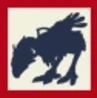

Level 75 reference · Zenith rules


Chocobo Digging is a hobby in FFXI in which you use Gysahl Greens to get chocobos to dig up potentially valuable items. The items vary by zone and rarity. All that you need in order to dig is to ride a chocobo, have Gysahl Greens in your inventory, and select the dig command from the menu options. Each time you use the dig command, one bunch of Gysahl Greens is removed from your inventory.
- (Eastern/Western Altepa Desert, Batallia Downs, Bhaflau Thickets, Bibiki Bay, Buburimu Peninsula, Carpenters' Landing, North/South Gustaberg, Jugner Forest, Konschtat Highlands, La Theine Plateau, Meriphataud Mountains)
- (Pashhow Marshlands, Rolanberry Fields, East/West Ronfaure, Sanctuary of Zi'Tah, East/West Sarutabaruta, Sauromugue Champaign, Tahrongi Canyon, Valkurm Dunes, Wajaom Woodlands, Yhoator Jungle, Yuhtunga Jungle)
See Also
Adapted from Eden Wiki: Chocobo Digging · Contributors and history · CC BY-SA 4.0. Revision 16508. Layout, links and optional background text adapted for Zenith.